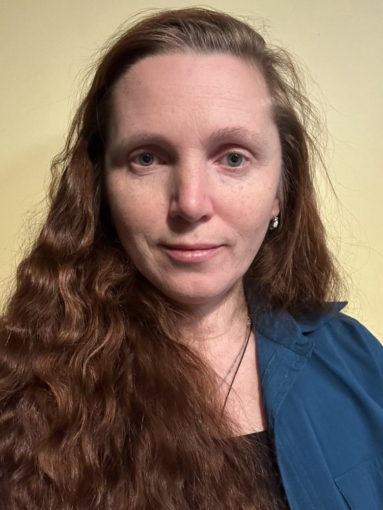

Learning design
Workshops, curriculum, microlearning, exercises, and practical learning architecture.
EDUCATION · DESIGNI design learning experiences, explore how people think and work, and help turn difficult questions into something useful.
My background spans adult education, leadership development, and technical teams. I care about ideas that survive contact with real life.

Enough context to begin a conversation. The work itself tells the fuller story.
My work moves between how adults learn, how leaders manage, how teams make decisions, and how ideas become useful tools.
Workshops, curriculum, microlearning, exercises, and practical learning architecture.
EDUCATION · DESIGNFacilitation, management challenges, motivation, communication, and organizational behavior.
PEOPLE · PRACTICEPsychology, questioning, sense-making, and connecting ideas from different disciplines.
INQUIRY · IDEASExploring AI-supported workflows, interactive practice, and tools that can be reused.
TOOLS · EXPERIMENTSSome are established approaches; others are independent concepts being developed. Each page is clearly labelled, and company-confidential materials are excluded.
A different way to organize complexity, notice connections, and make thinking visible.
The questions we choose shape what we are able to learn.
What happens to the emotions that enter a room — and who ends up holding them?
What keeps people engaged when targets, uncertainty and rejection are part of the job?
A practical introduction to the workplace expectations people are rarely taught explicitly.
Before building a course, ask whether training is actually the answer.
A training request can point to a skills gap. It can also point to unclear expectations, a broken process, the wrong tools, or something else entirely.
I prefer to understand the problem before deciding what kind of solution it needs.
Do people know how to do it? Have they practiced under realistic conditions?
Are instructions clear? Is the process workable? Is there time, feedback, or a reason to act?
A substantial collection of recommendations will live here. We can also organize them by what colleagues actually describe: design, collaboration, facilitation, or leadership.
Reserved for an authentic LinkedIn excerpt, name and professional role.
AWAITING ORIGINAL TEXTReserved for an authentic LinkedIn excerpt, name and professional role.
AWAITING ORIGINAL TEXTReserved for an authentic LinkedIn excerpt, name and professional role.
AWAITING ORIGINAL TEXTNo fictional testimonials. We will use the original language and provide attribution where possible.
Essays, research, travel, stories and questions are part of the same curiosity that shapes my professional work.
Thinking about leadership, psychology, organizations, and the occasional lesson from the mountains.
We will add the actual articles and links here once the selection is ready.
I have a PhD in Adult Education and a career that has moved between teaching, quality assurance, management, and learning and development.
Working with technical teams made me attentive to the gap between knowing something and being able to use it. Teaching adults taught me to take that gap seriously.
Outside work, I write, photograph, travel and keep collecting questions. They tend to find their way back into my professional thinking.
Conversations about learning, leadership, writing and unusual projects are welcome.
Preferred email and LinkedIn profile will be added here once confirmed. In the meantime, the portfolio is still being developed.